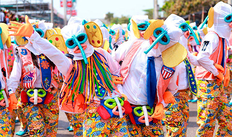
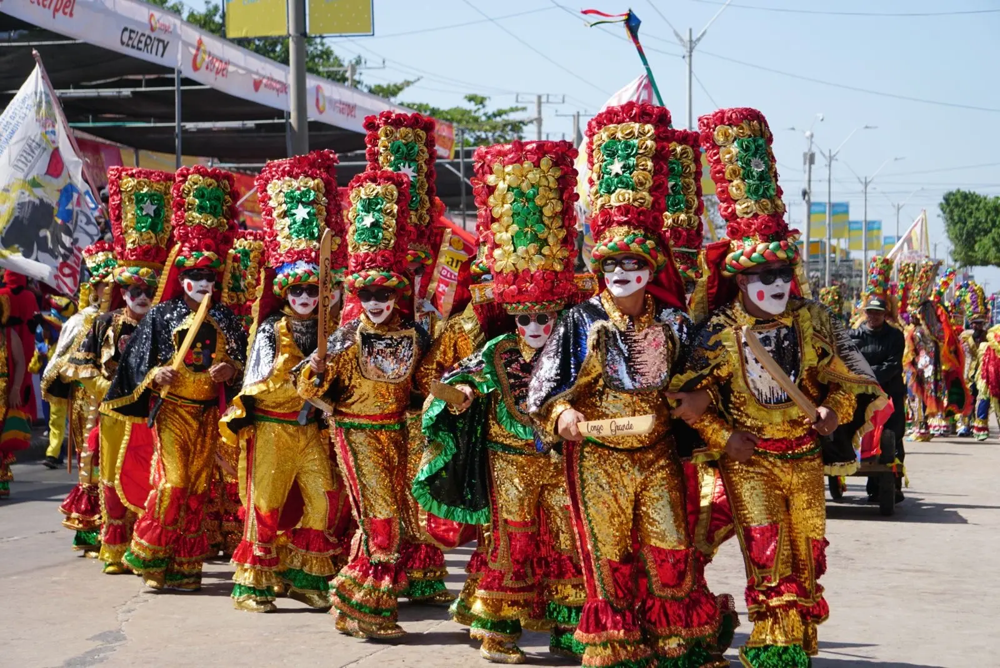

Carnaval de Barranquilla
Descripcion historica del evento
El Carnaval de Barranquilla es una de las expresiones culturales mas importantes de Colombia. Fue declarado Patrimonio Cultural Inmaterial de la Humanidad por la UNESCO en 2003. Sus origenes se remontan al siglo XIX, cuando comunidades afrodescendientes, indigenas y europeas mezclaron sus tradiciones para crear una celebracion unica. Durante cuatro dias la ciudad se transforma en un escenario de musica, danza y colorido.
Danzas y vestuarios
Las danzas son el corazon del carnaval: el congo, la cumbia, el mapale y el garabato son las mas representativas. Los vestuarios son elaborados a mano con plumas, lentejuelas y telas de colores vibrantes. Cada comparsa representa una historia o personaje tradicional.
Importancia cultural
El Carnaval representa la memoria viva de la diversidad etnica del Caribe colombiano. Es simbolo del orgullo nacional y genera un gran impacto economico y turistico para la region cada año.
Galeria de imagenes

